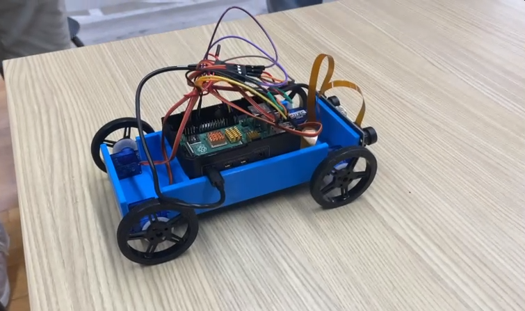
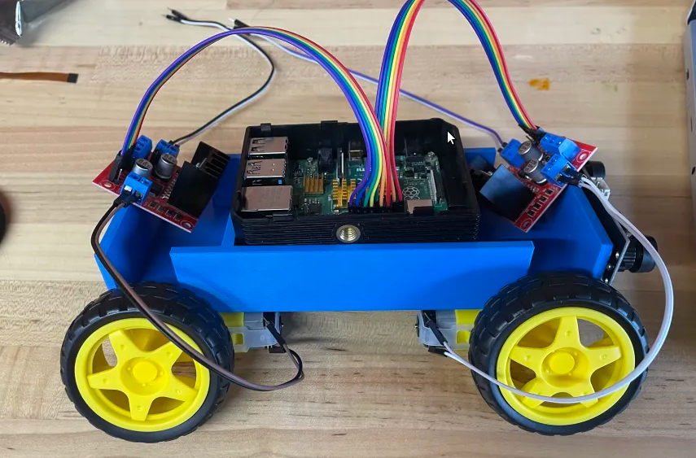

For our Spring 2024 ECLAIR project, we decided to embark on something much more extensive than the single
semester projects we did in the past. We chose to design and create an autonomous remotely-controlled car. The
twist of this project is the car's capacity to understand natural language.
Why natural language integration?
Not only is this something tesla is working on right
now, but we felt there were some unexplored applications of NLP in transportation technology. When a car
is autonomous, the user must place a degree of trust in the car's sensors and software. However, few are willing
to do this as there is a gap in communication between the vehicle and the driver. You see a car that is stopped
in front of you, however the car is not slowing down; how can you be sure the car has detected the other
vehicle? You can't, so you take control and stop the car yourself.
This is where natural language can come in handy, not only as input, but as feedback. Imagine being able to
communicate with your car in this way, where the car can tell you: Hey, I see this car. This is a
general motivation of this project: to provide not only room for natural language processing, but also feedback
as well.
But first: building the car
After preparing a fleshed out plan for a good 10% of the semester, we made the choice of building the car base
ourselves instead of buying one. This choice was made mostly for educational purposes (and because we
underestimated the complexity of the task). I thought it was as simple as getting servo motors and wheels. We
bought the motors and 3D printed a chassis that allowed for them to be screwed into place. The motors would be
controlled using a Raspberry pi 4 someone happened to have on hand, and powered with a phone bank battery. The
overall car looked like this:

Here was where we encountered a problem. The servo motors were not properly responding to code we wrote. We
attempted to use pulse width modification (PWM) commands and the GPIO library. However, no matter what input
values we used, the wheels refused to change direction. The two right side wheels were turning one way while the
two left side wheels were turning the other. This led to the car constantly performing a weird drift motion. We
soldiered the wires together, thinking that the problem was a loose connection, but to no avail.
After a few days of hacking at it, it was decided that the problem was that there was no intermediary between
the pi and the motors, and that the motors were interpreting the pi’s instructions incorrectly. This was an
assumption made through research and the observation that the pi did block invalid inputs (such as negative
numbers for PWM). We tried again with newer motors that came with motor controllers:

…Yes, the motors were taped to the chassis designed for the older ones. Either way, this attempt also failed, as
now the motors didn’t move at ALL. There was a brief twitch occasionally, but otherwise, no movement. After
inspecting everything and trying different code modules for several more days (and even trying a different pi
device), we narrowed the problem down to the motor controllers, which apparent had a very old and flawed design.
A third set of similar but updated motors finally did the trick:
By the end of the semester, we had a remotely controlled car that could move forwards and backwards.
Reflection
Overall, I feel this was a semester where the team connected as friends. Conversation was easy, perhaps a bit
too much, impeding progress. But overall, I was very satisfied with creating a vibrant and collaborative
environment for people to work. I also felt many of us learned an immense amount when it came to circuitry, as
that was the cause of many of our complications.
This semester was relatively slow, and not much was done in terms of software. Thus, many members present to
work on software aspects of the project ended up not being very involved. The plan for next semester is to
focus on involving the software team more, as most people that join to do because of their interest in natural
language and machine learning.
Next Steps